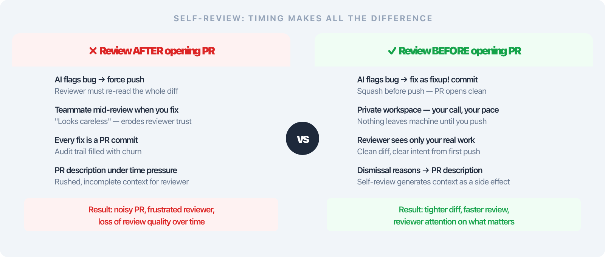
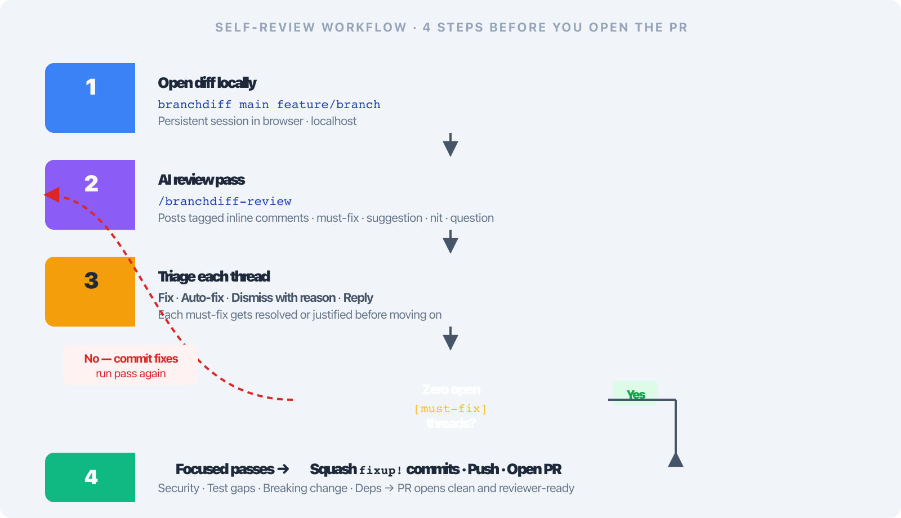
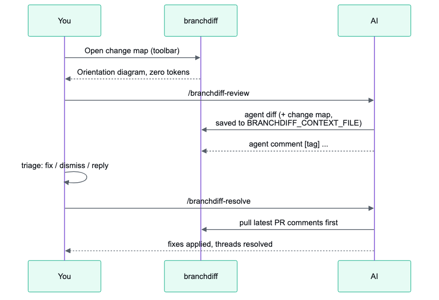

AI review that lands on the line.
Comments hit real diff lines with severity tags, nth-pass awareness skips what's already resolved, and resolve verifies before it claims success — instead of pasting a diff into ChatGPT and getting untraceable prose back.
Pasting a diff into ChatGPT is not a review.
- Comments don't land on lines. The model returns prose; you copy fragments back into GitHub by hand and lose the file/line binding.
- No audit trail. Two weeks later nobody knows which comments came from the AI, which from a teammate, or why one was dismissed.
- Every engineer, different prompt. No shared tone, no shared severity, no shared notion of "already raised."
- Re-running re-litigates everything. Run the same diff tomorrow and the AI raises the same nit on a thread you already resolved.
A controlled agent surface the AI drives.
Instead of letting an LLM freewheel through your repo, branchdiff exposes a small, audited set of agent commands. The AI can read the diff, drop a comment on a real line with a tag, resolve a thread, or dismiss it — but only through the surface. Every action lands in the same SQLite session as your manual comments, with the same severity taxonomy.
Ad-hoc AI · paste into ChatGPT
Untraceable prose · no line binding · no severity · no notion of "already raised" · fix-scripts claim done without verifying · the wrong branch silently receives the patch.
branchdiff agent surface
Comments land on real diff lines with [must-fix] / [suggestion] / [nit] tags · same session as manual comments · nth-pass aware (resolved stays resolved) · resolve verifies build + tests + ancestry first.
A second look, before anyone else sees it.

- Same diff, fresh eyes. Switch to the other side of the branch pair and read your own change as a reviewer would.
- Local, private. Run before the PR is even opened — nothing leaves the machine.
- Catches the obvious. Most "AI review" findings are things the author would have caught with one more pass.
Twenty-one subcommands. One audited surface.
- Read: agent diff, agent list, agent file <path> --ref <ref>
- Write: agent comment, agent general-comment, agent reply, agent edit-comment
- Lifecycle: agent resolve <id>, agent dismiss <id>, agent delete-thread
- Session: all accept --session / --port / BRANCHDIFF_SESSION_ID
Comments land. With a severity tag.
- Real file + line binding. Pinned to the diff at the compared ref — survives the model losing count.
- Same tag taxonomy as manual comments. [must-fix], [suggestion], [nit], [question] — the AI doesn't invent its own prefixes.
- Range + side. --end-line and --side old|new for multi-line and removal-only notes.
- Same SQLite session. Indistinguishable from your own comments in the UI.
The review can't be poisoned by HEAD.
- agent file <path> --ref <ref> reads file content at the compared ref — not whatever you happen to have checked out.
- Why it matters: if you've started patching things locally, or you're on a different branch, the AI still sees the diff as reviewed.
- Reproducible. Two engineers running the same review see the same code — no "works on my machine."
Resolve proves the fix before it claims done.
- Finds the construct by content, not line number. Line numbers drift across commits; the resolve skill locates the function/block by what it actually says.
- Confirms ancestry. git merge-base --is-ancestor + per-file compare prove the fix commit actually descends from the branch under review.
- Runs the project's own checks. Whatever build / typecheck / test the repo already has — resolve invokes it, not a toy script.
- Reports un-placeable findings. If it can't find the construct, it says so — never silently resolves.
- Names the branch the fix landed on. So you can audit "fix shipped on fix/auth-zero, not main."
- Starts from fresh remote state. Pulls the latest PR comments before it resolves anything, and refuses to edit a branch that's behind the PR head — it never resolves against a stale view of the thread.
Re-running the review doesn't re-litigate.

- Resolved threads stay resolved. Fetched before the review; the skill will not re-raise them.
- Dismissed threads stay dismissed — unless evidence changed. Only re-flagged if the new diff contradicts the recorded reason.
- Per-pass diff. Run -p 2 to review only what's new since the previous commit on the source branch.
- No more "AI keeps bringing up that nit."
Skills install in one command.
- Two skills. branchdiff-review (raise findings constructively) and branchdiff-resolve (verify before resolving).
- Slash commands. /branchdiff-review and /branchdiff-resolve in Claude Code.
- opencode reads .claude/skills. One install covers both Claude Code and opencode.
- Constructive tone is baked in. Leads with the problem, not judgment; acknowledges good code.
- Re-runnable. Updates files it wrote; leaves hand-written skills alone unless --force.
- ~9% leaner. Shared content between the review and resolve skills is now stated once instead of repeated — same guidance, a smaller file to load.
Or install once via the plugin marketplace.
- Lives in branchdiff-releases. Same repo as the curl installer that works for any SKILL.md-reading agent.
- Version tracks the CLI. Plugin version matches the CLI version — re-rendered and committed on every CLI release.
- Sparse checkout. Only the skills plugin is pulled — not the whole releases repo.
- Also: copy-paste prompts for ChatGPT, Gemini, Codex — drive the same agent commands without any plugin installed.
Export context, run an agent, import findings.
- review context — markdown or JSON export of the diff and open threads, for any AI.
- review run --exec <cmd> — pipes context to your agent, then imports its findings back as line-bound comments.
- --url bootstraps a session from any PR link.
- --fresh archives the current session first — clean slate for a new PR iteration.
- Any agent. claude -p, opencode run, gemini, a curl to an OpenAI-compatible endpoint — anything that reads stdin and writes JSON.
Open the PR. Read it. React. Then publish.

- 1 · Open locally. branchdiff against the branch pair — full file in place.
- 2 · Read it as a reviewer. Use the vim keys; mark files viewed as you go.
- 3 · React with the AI. /branchdiff-review or review run --exec — comments land on lines, tagged.
- 4 · Resolve or dismiss. Fix in another branch, run resolve — it verifies, then closes.
Same 4 steps — with the parts that keep it honest.

Eight guided review passes. Local by default.
Each pass is a targeted prompt — pick one instead of writing a prompt from scratch.
- Resolve is local-only by default. Threads close in your branchdiff session; nothing is pushed to GitHub or Bitbucket.
- --sync mirrors to the forge. Only when you explicitly ask.
- Remote comments pulled first. On PR-linked sessions, the latest forge comments are fetched before the review runs — so you don't re-raise what a teammate already said.
- Push to GitHub / Bitbucket skips threads with replies. Multi-reply threads stay local (the forge APIs can't represent them).

AI review that actually reviews.
A controlled agent surface that any LLM can drive; comments that land on real lines with severity tags; nth-pass awareness so resolved stays resolved; resolve that verifies ancestry, build, and tests before claiming done.
- Twenty-one agent subcommands — read, comment, resolve, dismiss, all audited.
- Reads file content at the compared ref, not your checkout — review can't be poisoned.
- Generated skills (skill add) + plugin marketplace; works with Claude Code, opencode, ChatGPT, Gemini, Codex.
- review run --exec one-shot pipe; eight guided review passes.
- Nth-pass aware: resolved not re-raised, dismissed only re-flagged if evidence changed.
- Resolve verifies by content-match, ancestry, build, and tests — local-only unless --sync.